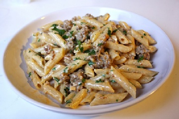

Spicy Pasta

This recipe, taken from the brilliant
Sam the Cooking Guy
on Youtube, is my go-to if I need something quick and flavorful. It takes no more than 20 minutes to finish and all of the ingredients are super accessible.
If you're not worried about a ton of calories and fat,
this is a good recipe to add to your weeknight repertoire.
Serves: 5-6
Prep time: 15-20 minutes
Ingredients:
- 1 pound pasta of your choice (penne is my go-to)
- 4 tablespoons of butter
- 4 cloves garlic
- 1 1/2 cups whipping cream
- 1/2 cup parmesan cheese
- 1 pound spicy Italian sausage
Optional:
- 5 slices bacon
- 3/4 cup breadcrumbs
- Pinch of parsley
Steps:
- Optional: Add bacon to a cold pan and cook until crispy
- Optional: Add a tablespoon of butter and toast the bread crumbs
- Heat oil in a sauce pan on medium heat and begin breaking up the sausage.
Once browned, add garlic and stir
- Add cream and simmer on low for about 10 minutes
- Add pasta to boiling water and cook until al dente
- Add pasta to sausage with a tablespoon of pasta water
- Add rest of butter. Add cheese (and parsley if desired)
- Optional: Top with bacon and breadcrumbs
This creamy pasta is one of my favorites. I hope you decide to give it a try, and thanks again to Sam the Cooking Guy for such a great dish!
Home Page